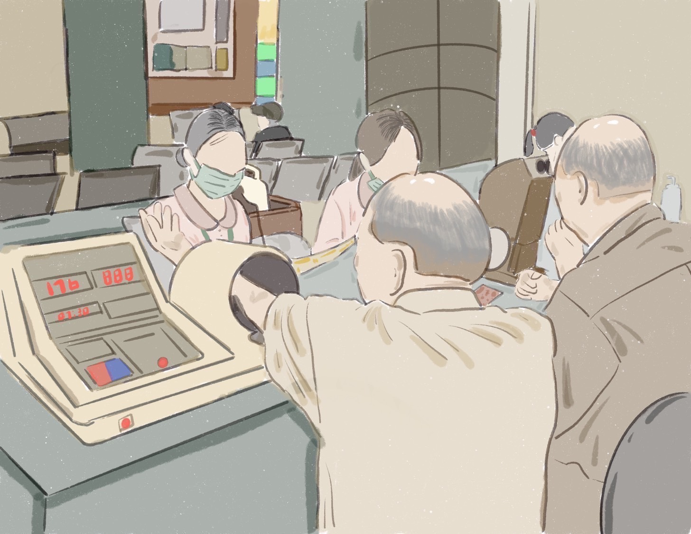
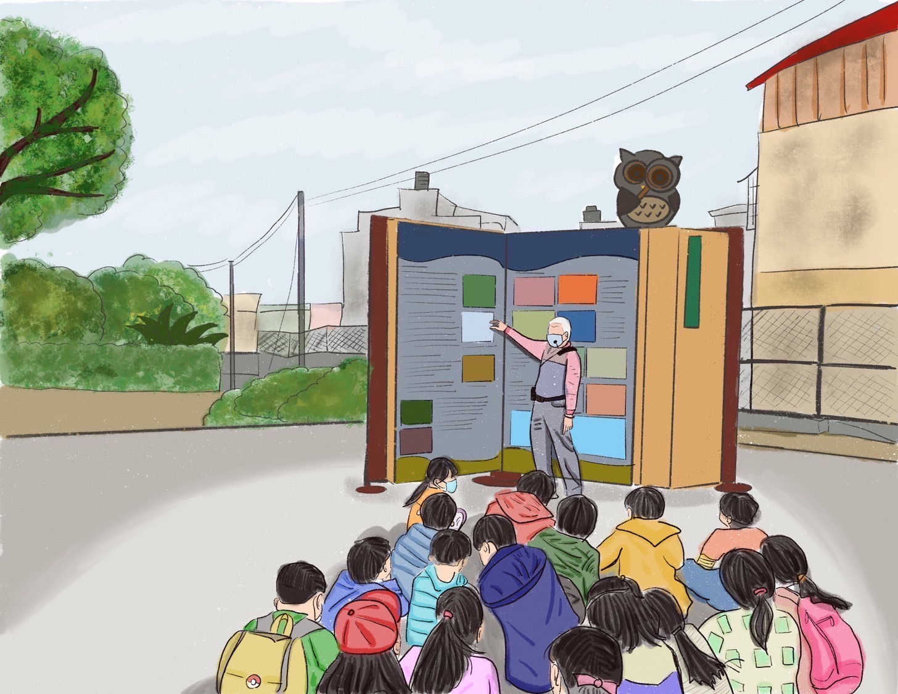
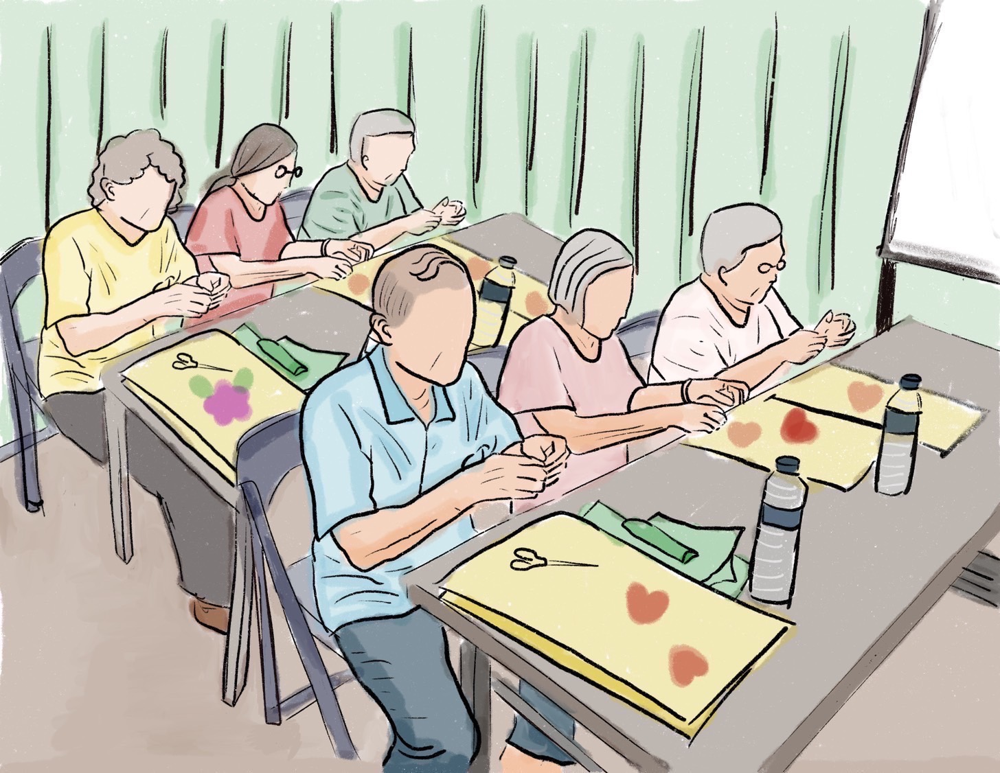
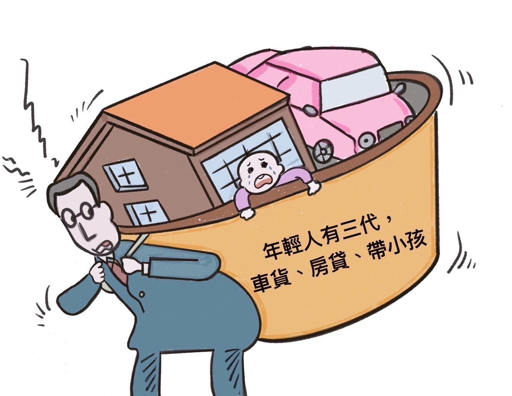
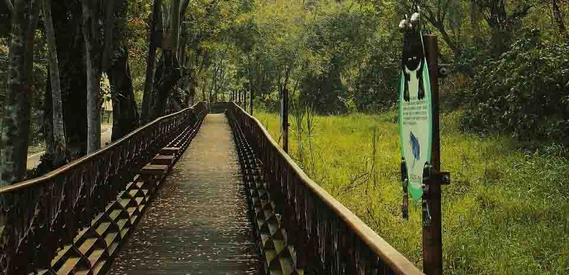

有句話是這樣說的：助人為快樂之本
在M型化越來越嚴重的當代台灣社會，有許多弱勢族群需要你我的一臂之力，讓他們擁有更多的關懷與協助，興隆里社區發展協會正是為發揚「人飢己飢、人溺己溺」的精神而成立的。
榮譽理事長一張朝宗先生，在正直壯年時期，太太便面臨需要洗腎的窘境，他不辭辛勞、每週三次從不間斷地陪太太去醫院接受治療。在這段期間，他看見隔壁急診室的病人家屬因為一週要洗腎多次，便決定放棄對家人的治療，令他感到十分不捨又心寒！

在步入高齡化社會的今天，我們看到人們在寵物生病時，會不厭其煩的親自帶寵物去醫院治療、住院，但對於拉拔自己長大的父母，卻選擇棄之不顧。這樣的現象，也讓張理事長意識到對於社區發展協會的老人服務部分需要投注更多心力。除此之外，興隆里社區發展協會也關注身心障礙、隔代教養兒童的照顧，只要是需要幫助的，都是他們服務的對象。

幹部們的工作十分繁重，可說是沒錢苦、有錢也累！沒錢要寫企劃、申請經費；有錢辦事後，則要寫結案報告，還要配合政府複雜的核銷規定，一張一張單據逐筆進行核銷。如此繁雜的工作讓志工的角色變得更為重要，也讓他們意識到人員的缺乏，反而因此更積極的把社區發展做起來。
現在的社區發展協會除了一般的體適能、手作、歌唱等等課程外，還成為身心障礙和長者的關懷據點。從今年三月開始一週開放五天，專門為長者開設幾堂延緩失能的課程，有專業的復健師來帶領年長者做復健，幫助長輩提升頭腦機能，也定期幫長者們做健康宣導和身體檢查。也就是說，興隆里社區發展協會經過多年的努力，在各屆理事長的努力經營之下，他們是以身心靈全方位的經營來關心里民長者的。


張榮譽理事長語重心長的說：「年長者長期獨自在家，沒有人陪伴也沒有人搭理，時間久了，自然變得憂鬱或者脾氣古怪，也會造成家庭矛盾。在這樣多重心理壓力下，就有年長者想不開。」想必理事長肯定是看過許多案例，而這樣的結果肯定不是大家樂見的，這就是協會存在的重要性。這位永遠的志工常常這樣鼓勵長者們：「來這邊就多活一年，就可以幫家裡省下醫療費！別獨自待在家！」
在社區發展協會，有人陪你聊天、分享日常、一起運動、一起健康。我們看見這些無償的援助都是社區發展協會裡的眾多志工們結合政府的力量，日覆一日、無怨無悔的付出。
這一份把別人家的父母當自家老人看待的心意，促成這個位處山邊、以農業為主的小小聚落，綿延傳遞古人｢里仁為美」的精神！
